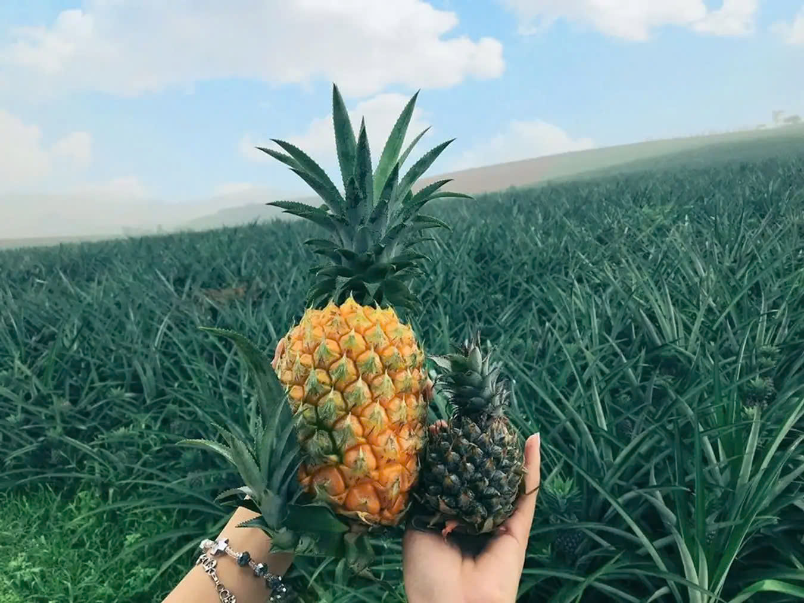
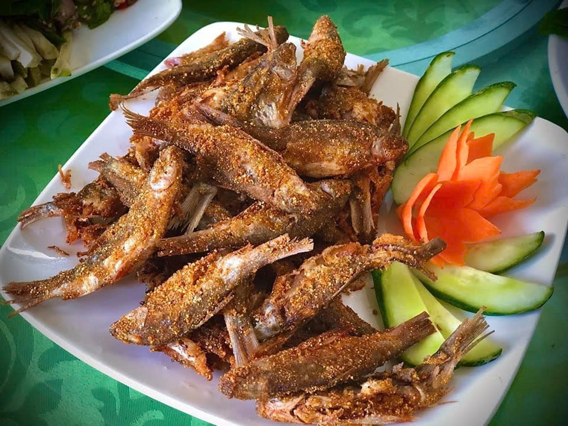
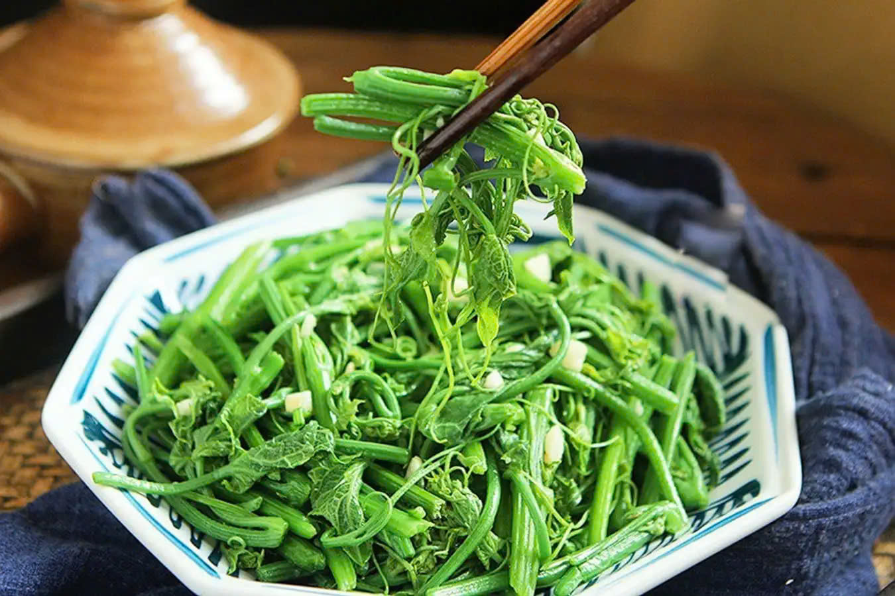
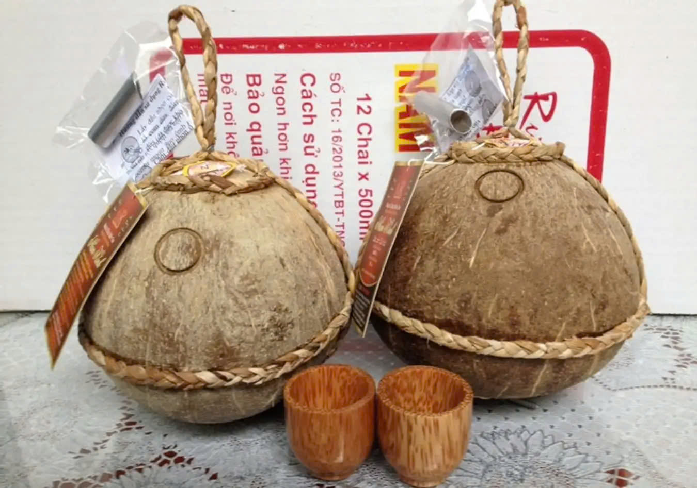
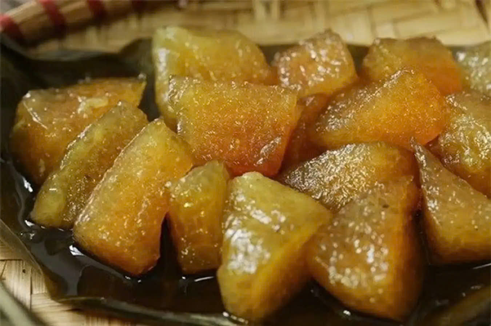

Giới Thiệu
Vĩnh Phúc không chỉ được biết đến là một trong những vùng kinh tế trọng điểm khu vực phía Bắc mà còn nổi tiếng với vô số địa điểm du lịch hấp dẫn như Tam Đảo, làng hoa Mê Linh, tháp Bình Sơn… Chưa dừng lại ở đó, đặc sản Vĩnh Phúc cũng vô cùng đặc sắc, làm say đắm biết bao tín đồ đam mê ẩm thực.
Đã đặt chân đến Vĩnh Phúc thì đừng quên thưởng thức các món đặc sản này bạn nhé:
Món Ăn Nổi Bật
Cá thính Lập Thạch
Món đặc sản Vĩnh Phúc này không khô như cá mắm biển cũng không bị nhão như khi ăn cá tươi hoặc cá rán nên rất bắt vị. Khi gỡ cá sẽ thấy thịt cá có màu mận chính. Trong lúc ăn có thể thấy vị cá ngọt đậm, thính thơm và giòn sừn sựt lạ miệng.

Dứa Tam Dương
Đã kể đến đặc sản Vĩnh Phúc thì không thể nào không nhắc đến dứa Tam Dương. Tại tỉnh Vĩnh Phúc, Tam Dương là huyện trồng nhiều dứa nhất. Dứa được trồng tại Tam DƯơng sẽ có những đặc trưng riêng như dứa mỡ gà có vị chua, màu vàng nhạt, dứa hướng đạo có vỏ nhỏ, vị ngọt, chua nhẹ, ruột giòn còn dứa mật thì nhiều nước, rất ngọt,...
Tép Dầu Đầm Vạc
Giống cá Tép Dầu không cần nuôi thả cầu kỳ và thường rất dễ phát triển. Và để thưởng thức món đặc sản Vĩnh Phúc này, nên đến Đầm Vạc vào khoảng tháng 8 đến hết tháng 10, khi Tép Dầu bắt đầu đẻ trứng nhân giống bởi Tép Dầu ăn ngon nhất khi trong bụng đang có trứng.
Su su Tam Đảo
Tại Vĩnh Phúc, Tam Đảo là vùng trồng nhiều su su nhất. Vì thế, đến Tam Đảo, bạn sẽ thường xuyên bắt gặp các món ngon được chế biến từ nguyên liệu đặc sản này. Có thể kể đến các món quen thuộc như su xào, su luộc… đặc biệt là các món làm từ ngọn su non, rất ngon và bổ dưỡng.
Tiên Tửu Ngọc Hoa
Để chế biến được món rượu dừa có vị cay nồng, ngọt thanh đặc trưng này, cần chọn những quả dừa ngon, gọt sạch phần xơ vỏ rồi tiêm hỗn hợp nếp cái đã trộn men vào và hàn thật kín. Đem dừa đi ủ cho đến khi quả dừa tỏa ra hương thơm mát thì lấy ra dùng.
Bánh gio Tây Đình
Bánh gio Tây Đình (Bình Xuyên) còn có một tên gọi khác là bánh nắng, có màu vàng nâu, vị thanh mắt vô cùng dễ ăn. Để có thể chế biến ra món đặc sản Vĩnh Phúc này, cần cẩn thận trong khâu chọn nguyên liệu, cách ngâm gạo và có công thức gói bánh, luộc bánh,... đặc biệt để bánh đúng với hương vị đặc trưng.
Liên Hệ
Để biết thêm thông tin, vui lòng liên hệ:
- Email: duogvanan@gmail.com / khongkimngoc1122006@gmail.com
- Điện thoại: 0984284582 / 0335825838
- Địa chỉ: Trung tâm văn hóa tỉnh Vĩnh Phúc